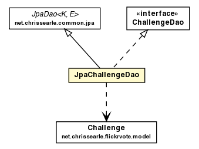

net.chrissearle.flickrvote.dao
Class JpaChallengeDao

java.lang.Object
 net.chrissearle.common.jpa.JpaDao<String,Challenge>
net.chrissearle.flickrvote.dao.JpaChallengeDao
net.chrissearle.common.jpa.JpaDao<String,Challenge>
net.chrissearle.flickrvote.dao.JpaChallengeDao
- All Implemented Interfaces:
- net.chrissearle.common.jpa.Dao<String,Challenge>, ChallengeDao
@Repository
public class JpaChallengeDao
- extends net.chrissearle.common.jpa.JpaDao<String,Challenge>
- implements ChallengeDao
| Fields inherited from class net.chrissearle.common.jpa.JpaDao |
entityClass, entityManager |
| Methods inherited from class net.chrissearle.common.jpa.JpaDao |
findById, persist, remove |
| Methods inherited from class java.lang.Object |
clone, equals, finalize, getClass, hashCode, notify, notifyAll, toString, wait, wait, wait |
| Methods inherited from interface net.chrissearle.common.jpa.Dao |
findById, persist, remove |
JpaChallengeDao
public JpaChallengeDao()
findByTag
public Challenge findByTag(String tag)
- Specified by:
findByTag in interface ChallengeDao
getAll
public List<Challenge> getAll()
- Specified by:
getAll in interface ChallengeDao
getClosedChallenges
public List<Challenge> getClosedChallenges()
- Specified by:
getClosedChallenges in interface ChallengeDao
getCurrentChallenge
public Challenge getCurrentChallenge()
- Specified by:
getCurrentChallenge in interface ChallengeDao
getVotingChallenge
public Challenge getVotingChallenge()
- Specified by:
getVotingChallenge in interface ChallengeDao
getVotedChallenge
public Challenge getVotedChallenge()
- Return challenge with votes
- Specified by:
getVotedChallenge in interface ChallengeDao
- Returns:
- challenge with votes - null if no votes found
findWithin
public List<Challenge> findWithin(Date date)
- Specified by:
findWithin in interface ChallengeDao
getMostRecent
public Challenge getMostRecent()
- Specified by:
getMostRecent in interface ChallengeDao
Copyright © 2007-2009. All Rights Reserved.